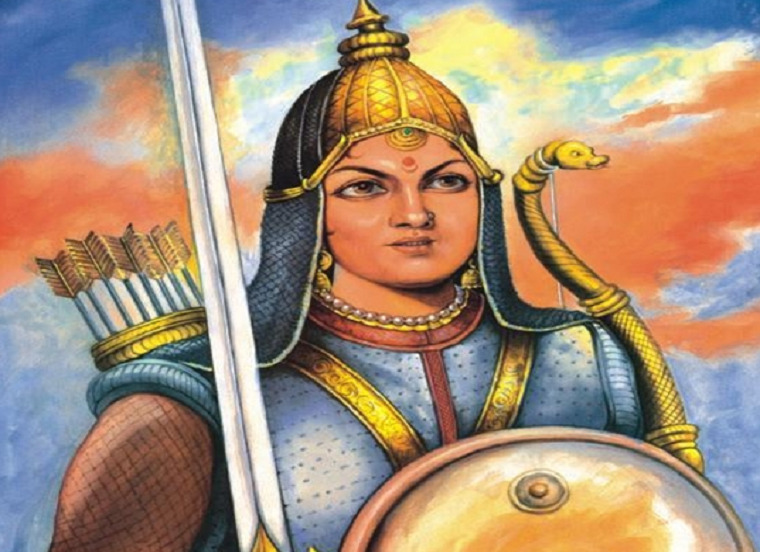

Rani Durgavati
Queen of Gondwana

Valiant Gond Queen
“Better to die with dignity than live without self-respect. I have served my motherland for a long time, and at a time like this, I won't let it be stained. There is no option but to fight." -Rani Durgavati
ABOUT
Rani Durgavati (5 October 1524 – 24 June 1564) was the ruling Queen of Gondwana from 1550 until 1564. She was born in the family of Chandel Rajput king Salibahan[1] at the fort of Mahoba. She was married to Dalpat Shah Kacchwaha, the adopted son of the king Sangram Shah of the Garha Kingdom. Rani Durgavati's achievements further enhanced the glory of her ancestral tradition of courage and patronage.